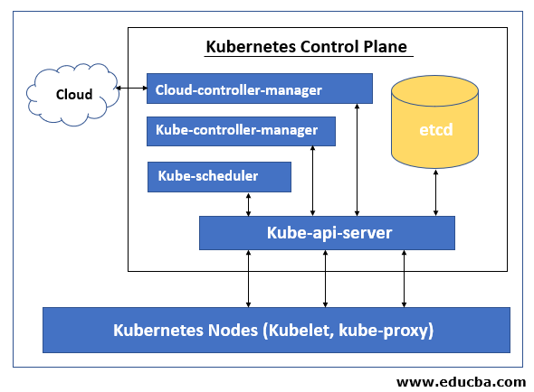
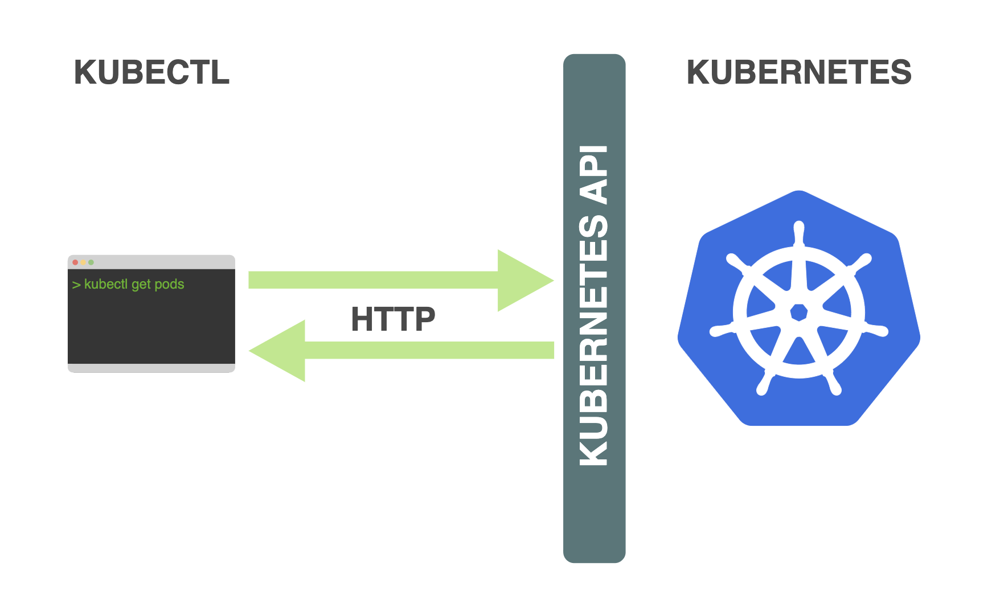
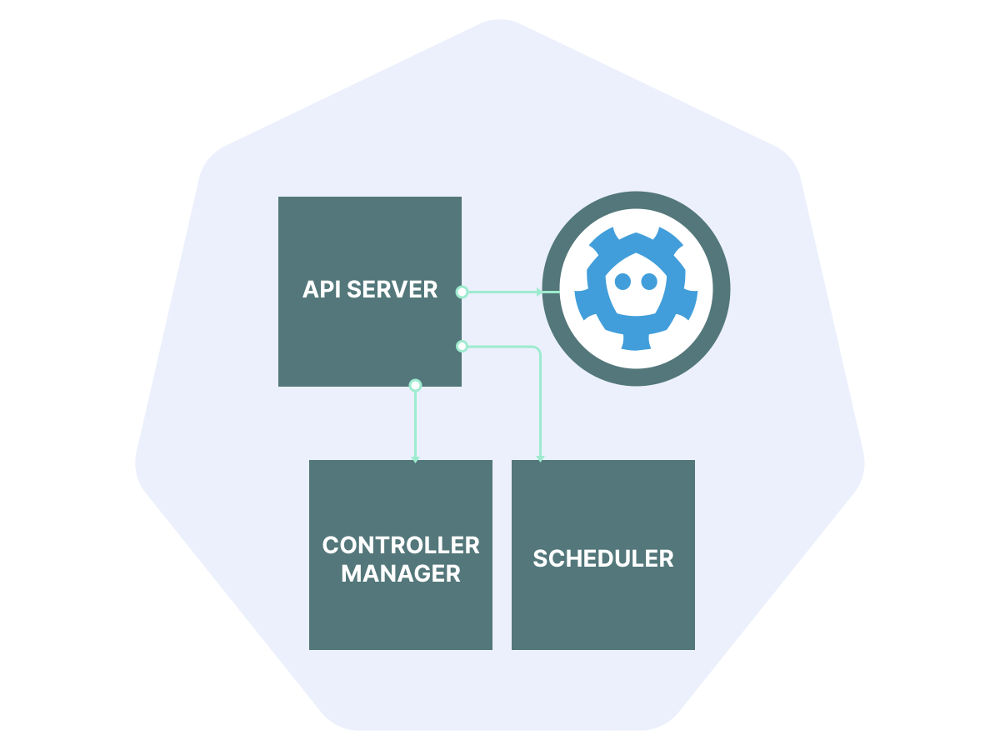
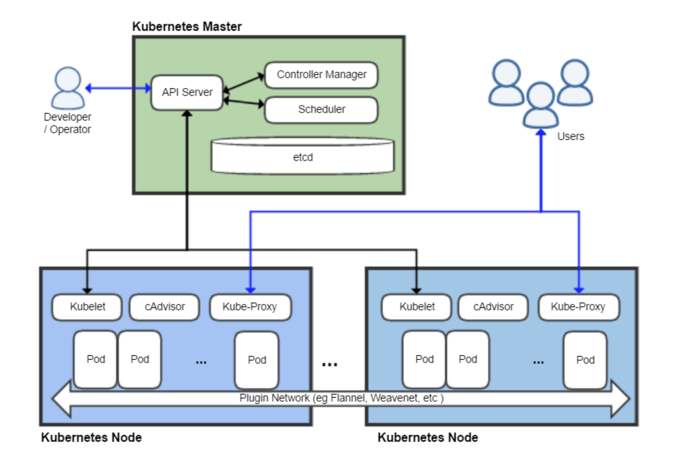
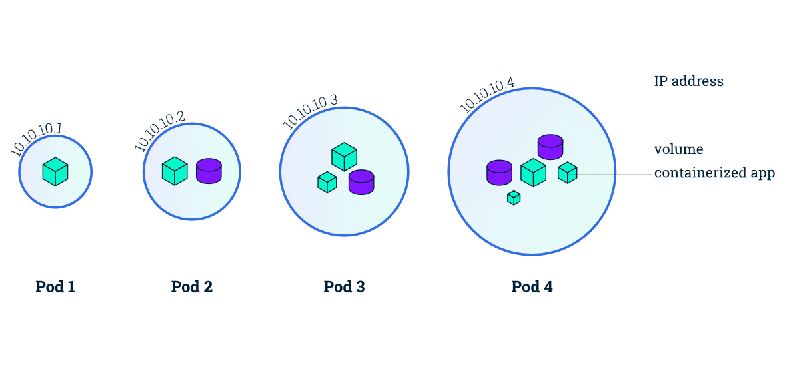
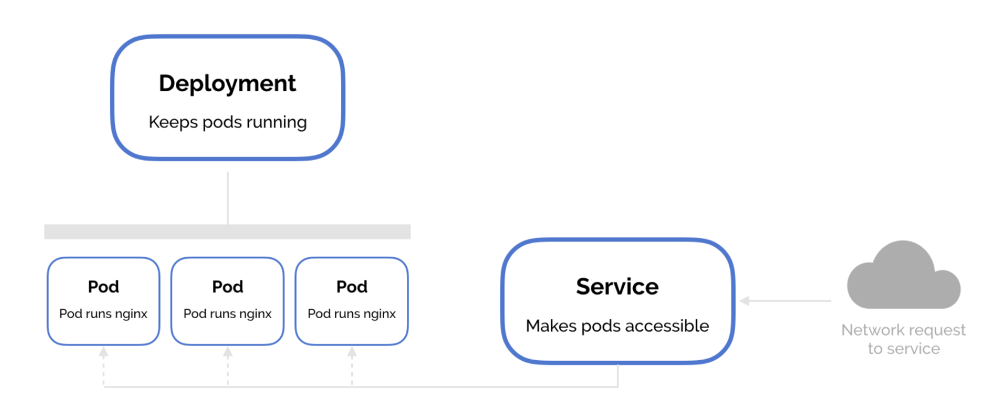
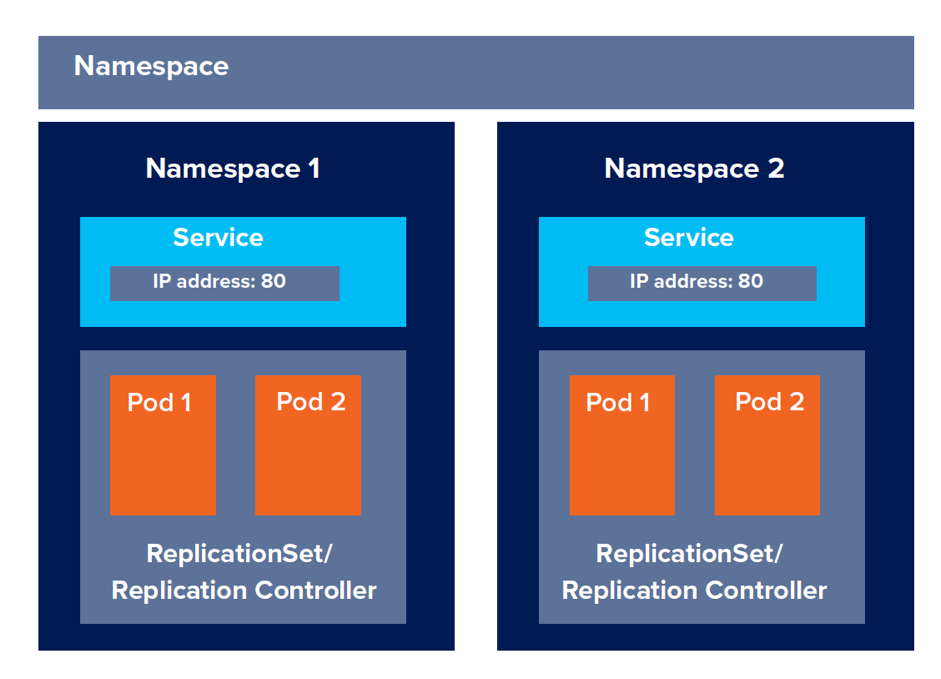

Intro to Kubernetes
Vivian Hafener
What is Kubernetes?
Kubernetes, or k8s, is an open-source system for automating deployment, scaling, and management of containerized applications.
K8s' main focus is scaling, both on a service-level and on a platform-level basis. A k8s cluster can be run on a raspberry pi, across several VMs, or on an entire datacenter. There are also cloud-based options of hosting k8s, such as Google Kubernetes Engine
Elements of k8s
Basics of Cluster Architecture
Control Plane Components
What is a control plane?
kube-apiserver
etcd
kube-scheduler

kube-controller-manager
Node Components
Pods

Example of a deployment
apiVersion: apps/v1
kind: Deployment
metadata:
name: nginx-deployment
labels:
app: nginx
spec:
replicas: 3
selector:
matchLabels:
app: nginx
template:
metadata:
labels:
app: nginx
spec:
containers:
- name: nginx
image: nginx:1.14.2
ports:
- containerPort: 80
$ kubectl apply -f changes.yaml
Services
Example of a service
apiVersion: v1
kind: Service
metadata:
name: my-service
spec:
selector:
app.kubernetes.io/name: MyApp
ports:
- protocol: TCP
port: 80
targetPort: 9376
Using services in kubernetes
$ kubectl apply -f service.yaml
$
Namespaces
Create and interact with namespaces
kubectl create namespace my-namespace
kubectl get namespaces
kubectl delete namespace my-namespace
Not all objects are in a namespace
# In a namespace
kubectl api-resources --namespaced=true
# Not in a namespace
kubectl api-resources --namespaced=false
Get pods in namespace
kubectl get pods --namespace=my-namespace
Workloads
Controlling and interacting with a cluster
Sources:
- https://kubernetes.io/docs/
- https://collabnix.com/a-quick-look-at-the-kubernetes-api-concepts/
- https://www.educba.com/kubernetes-control-plane/
- https://learnk8s.io/etcd-kubernetes
- https://www.sobyte.net/post/2022-03/how-kubernetes-controller-manager-works/
- https://matthewpalmer.net/kubernetes-app-developer/articles/kubernetes-networking-guide-beginners.html
- https://www.weave.works/blog/optimizing-cluster-resources-for-kubernetes-team-development
- https://matthewpalmer.net/kubernetes-app-developer/articles/kubernetes-deployment-tutorial-example-yaml.html